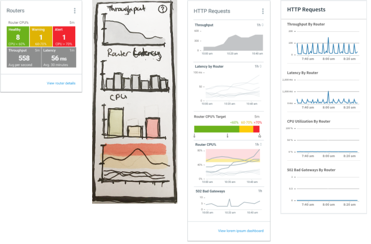
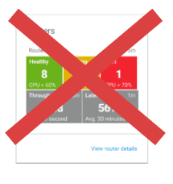

Rapid Prototyping
In our situation, it was almost impossible to thoroughly understand metrics and all their implications up front. We needed to just get ideas out of our heads and into the world quickly and start learning. Rapid prototyping means being wrong constantly until you gain confidence that you aren't.

Evolution of a metrics panel.
The design above on the left was our initial attempt at a router health design we presented to the advisory panel. It did not go over well. During our first feedback session, one panel member's first comment was, "I don't like anything about this."

Our first router panel design didn't go over well.
I probed the panel by asking, "What about this don't you like?" We quickly learned what we got wrong: We focused too much on router CPU and tried to force everything into a stoplight visualization. We didn't include overall traffic. So we went back to the drawing board. (Literally.)
The design above on the left was our initial attempt at a router health design we presented to the advisory panel. It did not go over well. During our first feedback session, one panel member's first comment was, "I don't like anything about this."
Two more versions. We increased fidelity as our confidence in the design grew.
What we learned from the expert panel is that operators care first about overall traffic and whether it is trending up or down. If something is concerning, they then will want router details, such as latency and errors.
For data dashboards, like in typography, meaning drives layout.
Through our iterative design process, we first understood the implications of metrics and how they naturally hung together with others. That drove layout decisions. For example, some indicators, like HTTP throughput, are key to interpreting others, and therefore are given prominence.
Interpreting a metric is often contingent on others. This informed layout decisions.